How we used Ruby to build Locaweb's cloud
Willian Molinari
a.k.a PotHix
Motivation
Working at locaweb
on the past 3 years
A lot of known people
Which problem we wanted to solve
Cloud server
Cloud server technologies
- Perl
- Java
- VMware
VMware architecture
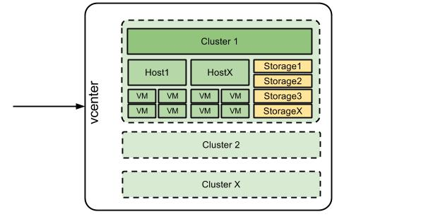Problems
for both technical and product sides
Cloud server PRO
Cloud server PRO technologies
- Ruby
- Xenserver
Xen architecture
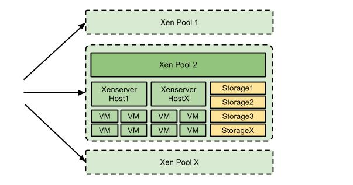Xenserver, XenAPI and XMLRPC
with a python example
Ruby + XenAPI
XenAPI example - get disks
vm_ref = session.VM.get_by_uuid(virtual_machine.uuid)
vm_vbds_refs = session.VM.get_record(vm_ref)["VBDs"]
disks = vm_vbds_refs.inject({}) do |disks, vm_vbd_ref|
vm_vbd_record = session.VBD.get_record(vm_vbd_ref)
if vm_vbd_record["type"] == "Disk"
disks[vm_vbd_ref] = vm_vbd_record
end
disks
reference: Xenserver API documentation
xenapi-ruby helper for this code
# Get all disks for a VM
disks = virtual_machine.vbds
xenapi-ruby provides some helpers
But the XenAPI way is still valid
Starting infrastructure
One pool, one firewall (providing NAT) and one DHCP server
Something like this...
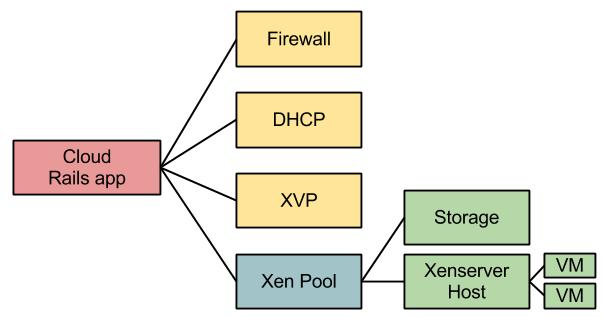Async all over the place
Different queue implementations
XMPP, ActiveMQ (+ Stomp), Resque
Resque implementation example
require "consumers/resque/configuration"
module Resque
class Consumer
class << self
def queue(name)
@queue = name
end
...
app/consumers/resque/consumer.rb
XMPP implementation example
require 'xmpp4r'
module XMPP
class Consumer
class << self
attr_reader :queue_name, :queued_process, :timeout_value
def queue(name)
@queue_name = "#{name}@localhost"
end
...
app/consumers/xmpp/consumer.rb
Easily changeable
# -*- coding: UTF-8 -*-
Consumer = Resque::Consumer
app/consumers/consumer.rb
Resque won
BTW
Virtual machine Installation process
bpmachine example
process :of => :install do
must_be :machine_created
transition :select_ips,
:from => :machine_created,
:to => :ips_selected
transition :queue_dhcp_for_install,
:from => :ips_selected,
:to => :dhcp_synchronized
...
and the steps
module InstallSteps
def select_ips
log_activity(:info, :id => id, :status => 'starting')
create_ip(primary=true) unless primary_ip_pair
log_activity(:info, :id => id, :status => 'done')
end
def queue_dhcp_for_install
...
end
app/steps/install_steps.rb
Get the name and IP
A different app to handle these
DHCP configuration
isc-dhcp
Dummy dhcp explanation
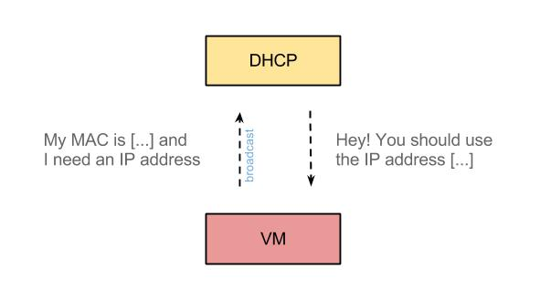ISC DHCP file example
# cpro0007
host 3ea808bd-5ef0-4227-a617-f5b0694e408c{
hardware ethernet 00:25:22:bd:d1:20;
fixed-address 186.202.1.7;
option host-name "cpro0007";
}
# cpro0051
host 3ea808bd-5ef0-4227-a617-cf5b0694e408 {
hardware ethernet 00:25:22:bd:d1:21;
fixed-address 186.202.1.8;
option host-name "cpro0051";
}
ERB file
<% vms.each do |vm| %>
# <%= vm.name %>
host <%= vm.uuid %> {
hardware ethernet <%= vm.mac %>;
fixed-address <%= vm.private_ip.address %>;
option host-name \"<%= vm.name %>\";
}
<% end %>
Simple script for DHCP
# Prepare isc dhcp file
echo -e "<%= dhcp_config %>" > /etc/dhcp/<%= Config[:dhcp_conf_file] %>
# Restart DHCP
sudo /etc/init.d/isc-dhcp-server restart
Net::SSH as Transport layer
Net::SSH.start(@host, @user, ssh_options) do |ssh|
ssh_result = ssh.open_channel do |channel|
channel.request_pty do |chn, success|
raise "Could not obtain pty from ssh" unless success
chn[:out] = ""
chn.exec command
...
Firewall configurations
default DROP
Adding some firewall rules
iptables -A <%= internal_address %>/32 \
-p <%= rule.filter_protocol %> \
-s <%= rule.filter_address %> \
-d <%= internal_address %> \
--dport <%= rule.filter_port %> \
-j ACCEPT
Configuring NAT
# Configuring NAT
...
iptables -t nat -A PREROUTING -d <%= rule.external_address %> \
-j DNAT --to-destination <%= rule.internal_address %>
iptables -t nat -A POSTROUTING -s <%= rule.internal_address %> \
-j SNAT --to-source <%= rule.external_address %>
...
VNC access
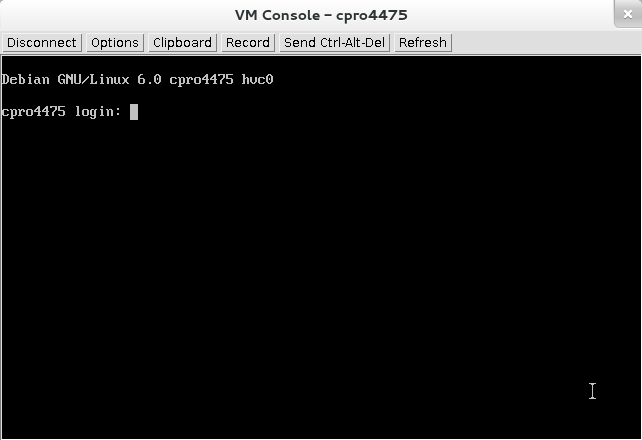Provided by Xen VNC Proxy (a.k.a XVP)
Example XVP file
POOL XENSERVERPOOL1
DOMAIN ""
MANAGER root proxy_password_encrypted_hash
HOST 10.20.30.40
VM 7890 4344dc8f-1bdd-4b65-812a-a0dc9b27256e console1_encrypted_pass
VM 7891 c5b2d28e-4c11-492f-9d09-33670876cb4a console2_encrypted_pass
Generated from XVP binary
# for hosts
/bin/echo -e "proxy_password_here" | /usr/sbin/xvp -x
# for each console
/bin/echo -e "console_password_here" | /usr/sbin/xvp -e
Wait...XVP is open source
Ruby version
def encrypt_vnc(password)
key = [0xc1, 0x24, 0x08, 0x99, 0xc2, 0x26, 0x07, 0x05]
des = OpenSSL::Cipher::Cipher.new("des-ecb")
des.key = key.map(&:chr).join
des.encrypt
des.update(password).unpack('H*').first
end
coisa linda!
Post install process
VM already shipped by Xen
Windows? Linux?
Specialized post install
Done by virtual machine type
def post_installers
{ :windows2003 => PostInstall::Windows,
:windows2008 => PostInstall::Windows,
:linux => PostInstall::Linux }
end
...
def post_install
post_installers[code.to_sym].new
end
Simplified, of course... We have:
centos5, centos6, ubuntu9.04, ubuntu9.10, ubuntu10.04, ubuntu10.10, debian5, debian6, windows2003, ...
And managed ones!
linux + cpanel, linux + plesk, windows + plesk, ...
Linux post install
SSH and bash scripts
Windows post install
Winrm and powershell scripts
Partitioning disks example
More and more steps
- Added basic monitoring
- Configure DNS
- VM cleanup
- and so on...
And we're done!
production ready
Shipped with a simple architecture
Multi pool
"all your pools are belong to us"
Multi pool
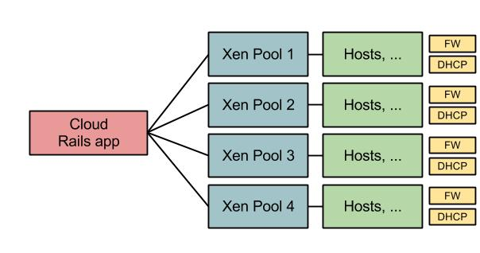Matrix machines
and their maintenance
A wild windows Matrix Machine appeared!

Security fix released
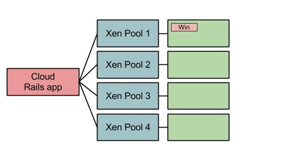Security fix applied
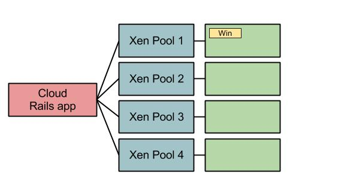Ok...But we have more!
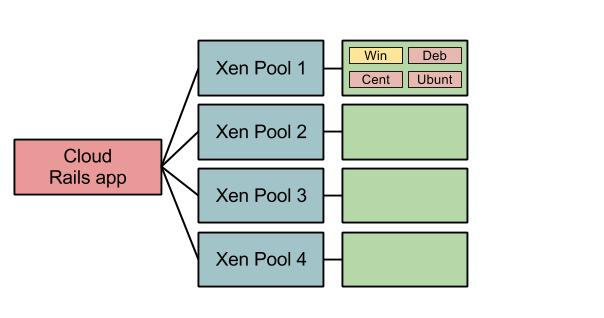We can deal with it!
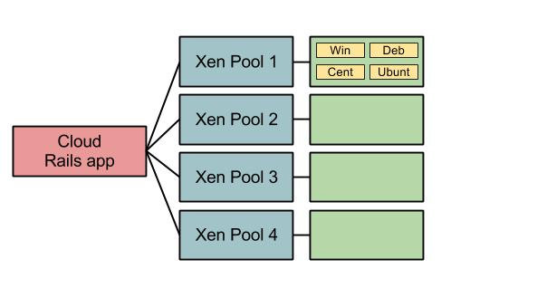But....WAT!
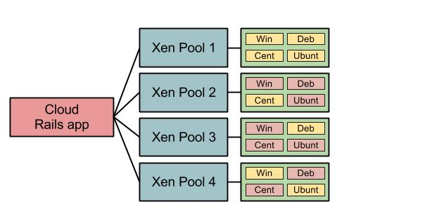Numbers!
- ~ 7000 VMs
- ~ 25 pools
- ~ 300 hosts
Xen import and export
not so well documented
Using HTTP!
def export(vm_uuid, options = {})
options = {:to => "/tmp/export_file"}.merge(options)
file = File.open(options[:to], "wb")
session_ref = self.key
task_ref = self.task.create "export vm #{vm_uuid}", "export job"
path = "/export?session_id=#{session_ref} ... "
uri = URI.parse "http://#{master_address}#{path}"
Net::HTTP.get_response(uri) do |res|
res.read_body {|chunk| file.write chunk }
end
options[:to]
ensure
file.close rescue nil
self.task.destroy(task_ref) rescue nil
end
Multi storage
or...datasets!
Multi firewall
avoiding package overflow
So basically...we have this:
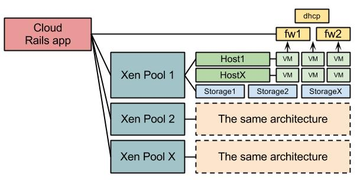Time to break responsabilities
by improving the infrastructure
New network infrastructure
dedicated servers for firewall and dhcp
Before
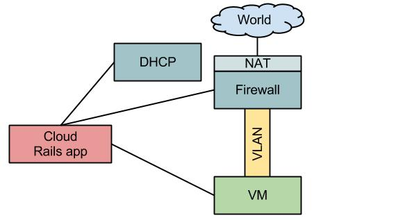Now
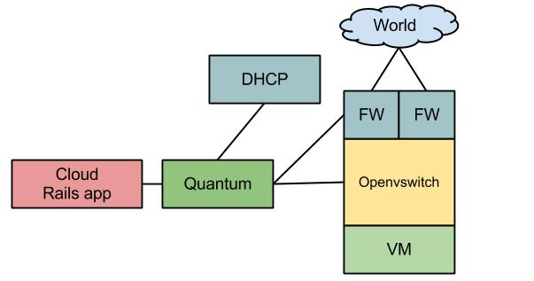Quantum
Quantum + Openvswitch
Not SSH anymore
Queueing and consuming using RabbitMQ
New firewall and dhcp architecture
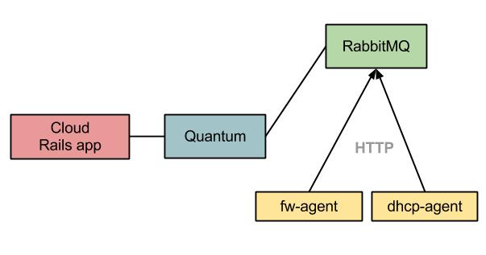New hypervisors to support
KVM, VMware
Simplestack!
A proxy for hypervisors
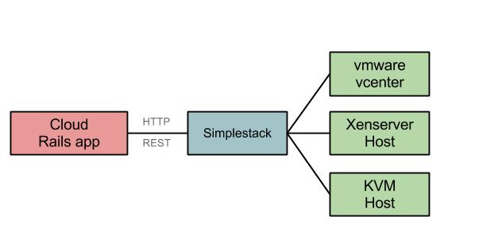Simplestack instead of xenapi directly
# Old xenapi code
session.VM.get_by_uuid(virtual_machine.uuid)
# Simplestack
pool.on_simplestack.guests.find(virtual_machine.uuid)
Using ruby simplestack client
Features worth mentioning
Autoscale and alerts
driven by monitoring
Leela
The flow
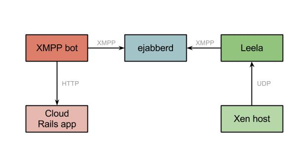Just messaging
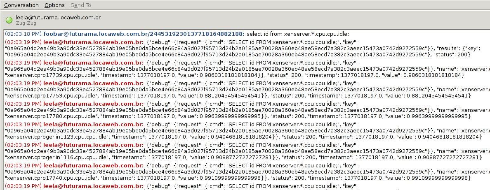Blather and daemon tools
require 'blather/client'
DaemonKit::Application.running!
message :chat?, :body do |m|
begin
if Weatherman::Message.should_process?(m)
message = JSON.parse(m.body, :allow_nan => true)["results"]
unless message["event"].nil?
Weatherman::Message.process(message["event"])
end
end
rescue => e
DaemonKit.logger.error "Invalid message #{m.body}"
DaemonKit.logger.error e.backtrace
end
end
Heterogeneous environment
new features and support for all versions!
Xen pool knows its network version
# -*- coding: UTF-8 -*-
module Network
module Manager
extend self
def for(pool)
pool.network_version.constantize.new
end
end
end
Different behaviors from version 1
# -*- coding: UTF-8 -*-
module Network
class Ver1
def internal_vlan?
true
end
def installation_ip(vm)
vm.public_ip.address
end
end
end
To network version 2
# -*- coding: UTF-8 -*-
module Network
class Ver2
def internal_vlan?
false
end
def installation_ip(vm)
vm.on_simplestack.ip
end
end
end
Multiple implementations for:
- network configurations
- firewall implementations
- post install methods
Lessons learned
- Start small and grow fast
- OOP helps a lot to keep the code organized
- Multiple projects
- Multiple languages